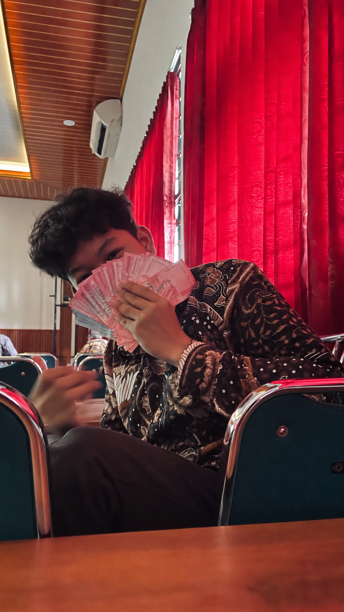

01
Design & Creative
Membuat desain visual, mengolah ide kreatif, dan merancang tampilan digital.
Mengeksplorasi kreativitas melalui desain dan teknologi.
Selamat datang di ruang digital saya. Tempat untuk berbagi karya, eksperimen, dan berbagai ide yang terus berkembang.

LumnzTyz, dikenal juga sebagai Luqman Arifin, merupakan pelajar dan kreator digital yang memiliki ketertarikan pada Desain Komunikasi Visual dan teknologi digital. Saya senang mempelajari hal baru, mengembangkan website, membuat desain, serta mencoba berbagai ide kreatif.
Dalam proses belajar, saya percaya bahwa setiap eksperimen adalah kesempatan untuk berkembang. Saya juga membangun proyek digital dan komunitas sebagai ruang untuk berkolaborasi, berbagi, serta mengembangkan kemampuan.
Berbagai teknologi, tools, dan software yang saya pelajari serta gunakan untuk mengembangkan proyek digital, membangun website, membuat desain, dan mengeksplorasi teknologi.
Membuat desain visual, mengolah ide kreatif, dan merancang tampilan digital.
Membangun tampilan website yang responsif, interaktif, dan nyaman digunakan.
Mengembangkan sistem backend, mengelola data, dan menghubungkan aplikasi dengan layanan API.
Mengeksplorasi pembuatan bot, integrasi API, dan otomatisasi berbagai fitur.
Mengelola penyimpanan data dan menghubungkan database dengan aplikasi.
Menggunakan berbagai tools untuk menulis kode, mengelola proyek, dan kolaborasi.
Mengelola lingkungan server, menjalankan aplikasi, dan melakukan deployment proyek.
Mengeksplorasi teknologi baru dan mengembangkan kemampuan melalui eksperimen proyek.
Beberapa eksperimen dan proyek digital yang menjadi bagian dari perjalanan belajar saya. Pilih tautan untuk melihat proyek secara langsung.
Website downloader TikTok dengan antarmuka sederhana untuk membantu pengguna mengakses media yang tersedia.
Kunjungi Website ↗Eksplorasi pengembangan bot WhatsApp berbasis JavaScript dengan fitur dan utilitas yang terus dikembangkan.
Lihat Repository ↗Eksplorasi pengembangan bot WhatsApp berbasis JavaScript dengan fitur dan utilitas yang terus dikembangkan.
Buka Panel ↗Proyek aplikasi Android yang dikembangkan sebagai bagian dari eksplorasi pembuatan produk digital.
Tanyakan Proyek ↗Setiap pengalaman menjadi bagian dari proses belajar dan membangun sesuatu yang lebih baik.
Mulai membangun komunitas sebagai ruang untuk berbagi minat dan bereksperimen di dunia digital.
Mengembangkan kemampuan di bidang Desain Komunikasi Visual, website, dan pengembangan aplikasi.
Terus mengeksplorasi ide, meningkatkan kualitas proyek, dan membuka kesempatan kolaborasi.
Saya terbuka untuk berdiskusi, bertukar ide, dan berkolaborasi dalam proyek kreatif maupun teknologi.
Silahkan Hubungi contact di atas jika ingin berkolaborasi dengan lumnztyz.